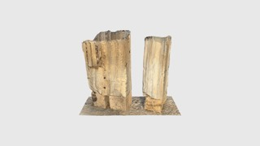
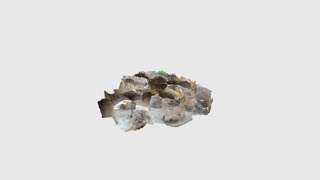
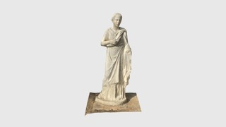
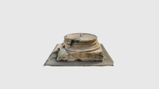
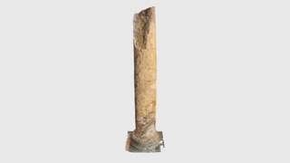
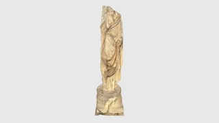
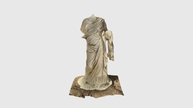
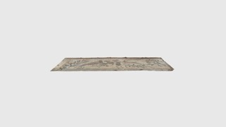
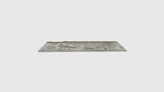
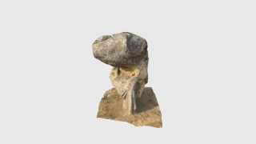
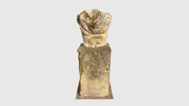
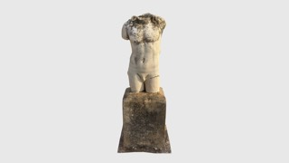
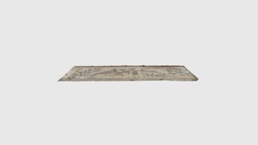
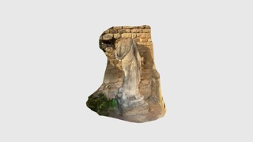
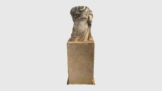
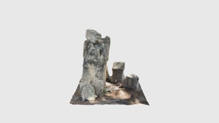
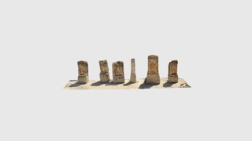
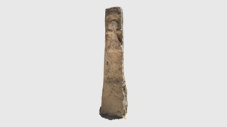
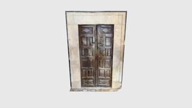
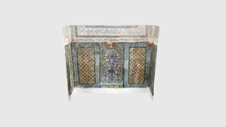
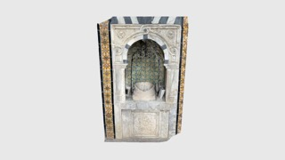
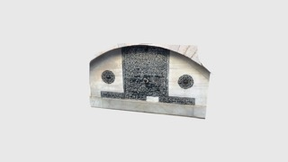
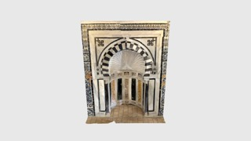
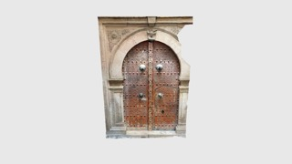
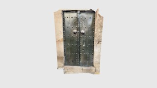
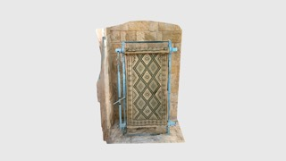
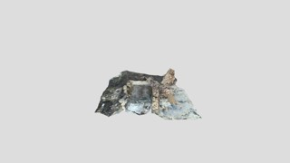
خمس قاعات من تراث حقيقي، مسحها متطوعون في الموقع بهواتف وكاميرات. كل قطعة هنا يمكن إدارتها وتكبيرها وفتحها كاملة. لا شيء خلف زجاج.
أسّس مستوطنون فينيقيون قرطاج، فصارت عاصمة إمبراطورية تسيطر على غرب المتوسّط. دمّرتها روما سنة 146 قبل الميلاد، ثم أعادت بناءها عاصمة لإفريقية الرومانية. وما يقف اليوم هو طبقات فوق طبقات: نصب بونية رُفعت لتانيت وبعل حمون تبعد خطوات عن أعمدة رومانية وفسيفساء الفيلات وأكبر مجمّع حمّامات بنته روما في إفريقيا. وقد مسح متطوّعونا أربع مناطق من الموقع.
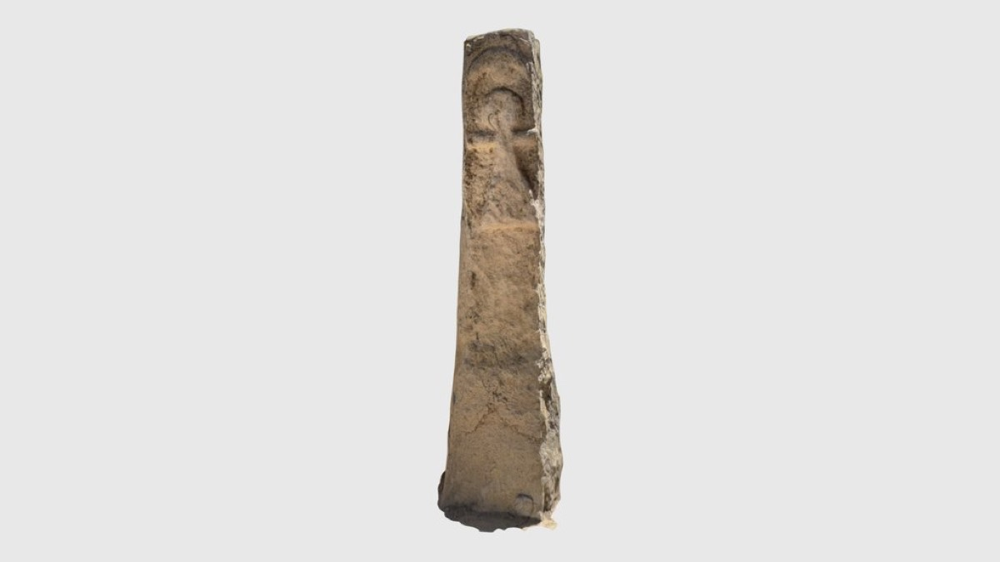
This 3D scan captures a بوني funerary stela from the Tophet of Salammbô, a sacred site in ancient قرطاج (present-day Tunisia). The stone is carved with the symbol of Tanit, the principal goddess of the Carthaginian pantheon, represented by a triangle (body), horizontal arms, and a circular head.
فتح السجل الكاملفي عهد هادريان، بنت روما معبدًا حول منبع جبلي في زغوان. ومن هناك حملت قناة مائية الماء أكثر من 90 كيلومترًا إلى قرطاج، وهي من أطول القنوات في العالم الروماني. والمعبد هو الرأس الضخم لذلك النظام. كانت الحنايا تحتضن تماثيل لآلهة المياه، وتمتدّ أفاريز الغار على الكرانيش، وسجّلت لوحة لاتينية أسماء من موّلوا البناء.
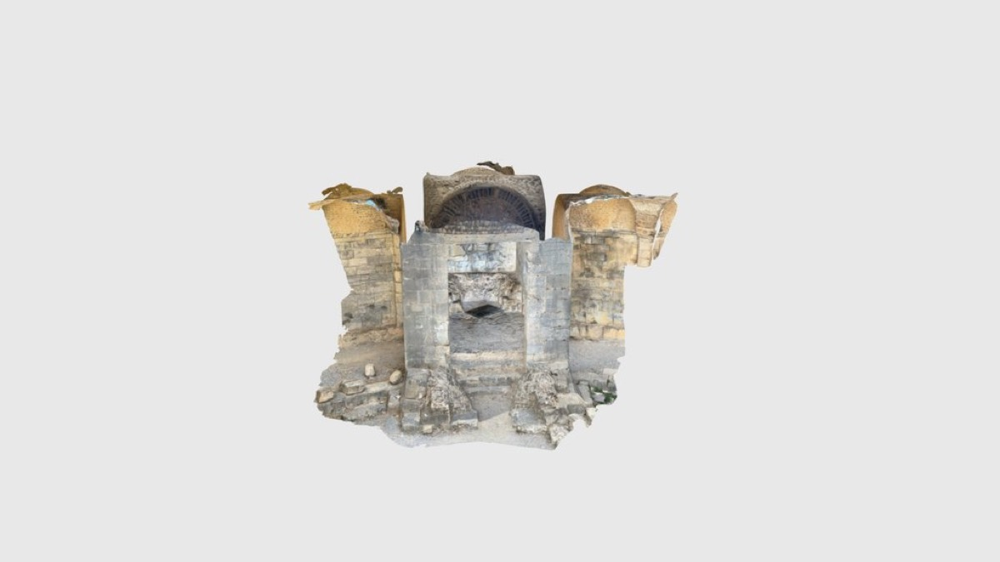
هذه الحنيّة الدقيقة الزخرفة جزء من معبد المياه الروماني في زغوان، الذي بُني في عهد الإمبراطور هادريان في القرن الثاني الميلادي. وكان المعبد نقطة انطلاق القناة المائية الضخمة التي حملت الماء العذب أكثر من 90 كيلومترًا إلى مدينة قرطاج.
فتح السجل الكاملالقيروان was founded in 670 CE and became the first Islamic city of the Maghreb and its spiritual centre for centuries. The Zawiya of Sidi Sahib, known as the Barber's Mosque, holds some of the finest العهد العثماني ceramic tilework and carved stucco in Tunisia. Scanning interiors like these is difficult. The surfaces are reflective, the light is low and the detail is small.
يجمع هذا المدخل المحفوظ بعناية بين باب خشبي ثقيل يحيط به زليج مزجج دقيق الزخرفة، وهو من سمات الزخرفة المعمارية الإسلامية التونسية.
فتح السجل الكاملنمت المدينة حول جامع الزيتونة وصارت من كبرى مدن العالم الإسلامي في عهد الموحّدين والحفصيين. وهي ليست أطلالًا؛ فالناس يعيشون ويعملون فيها اليوم. هذه العمليات وثّقت أبوابًا وآبارًا وأنوالًا ومحاريب في شوارع ما زالت مستعملة يوميًا، ومنها المدرسة الباشية لسنة 1752 والمدرسة السليمانية.
التاريخ/الحقبة: القرن الثامن عشر (العهد الحسيني) المادة/التقنية: رخام، جبس منحوت، زليج قلّالين الوصف: هذا العنصر المعماري هو محرم، وهو حنيّة زخرفية مستوحاة من شكل المحراب.
فتح السجل الكاملفي مطلع 2026، أزاحت عاصفة هاري الرمل عن قاع البحر قرب نابل فكشفت جزءًا من نيابوليس، وهي مدينة بونية ثم رومانية ابتلعها البحر بعد تسونامي في القرن الرابع الميلادي. ظلّت كتل الحجارة وخطوط الجدران ظاهرة أيامًا قليلة قبل أن تعود الرواسب. وثّقت Tanit XR المنطقة المكشوفة حديثًا خلال تلك النافذة الزمنية. تضمّ هذه القاعة قطعة واحدة، وهي سبب عملنا بسرعة.
موقع جديد في نيابوليس كشفت عنه الفيضانات الأخيرة (عاصفة هاري) في تونس. مسحه Youssef Lakdhar!.
فتح السجل الكاملأغلبها التُقط بهاتف. كما يُعاد بناء القاعات كفضاء حقيقي يمكنك التجول فيه بالواقع الافتراضي، قاعة بعد قاعة، على يد الفريق نفسه.
زُر المتحف الافتراضي تطوّع معناتبحث عن مسح معيّن أو ملف للتنزيل أو النسخ الجاهزة للألعاب؟ تصفحوا الأرشيف كاملا.